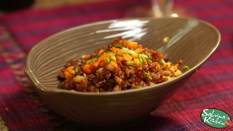

- RECIPES
- EPISODE GUIDE
MORE FROM THE SHOW

CHINESE STYLE STIR FRIED RICE
Here's how to make the dish
- Place cooked rice in pan (i use dark rice as its healthier but white rice is cool too)
- Place some sesame oil, garlic, when hot throw in cooked rice
- Fry, chop some carrots and leeks (at least a palm full of each and throw in too)
- Beat 2 eggs, make a well and throw into pan too
- Add about a fourth cup soy sauce and a tablespoon of honey and a tablespoon of vinegar
- Cook rice another 15 minutes
- Serve in little bowls and garnish with some left over carrots and leeks!
Enjoy!!!! ( :
Try with chopsticks for an asian touch!
From my kitchen to yours with love, Mwahhh! -S
Ingredients:
- 5 to 6 cups cooked rice
- sesame oil
- garlic
- carrots and leeks
- 2 eggs
- soy sauce
- honey
- vinegar